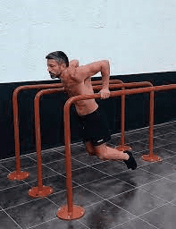
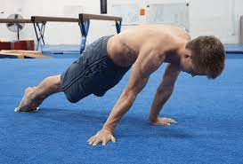
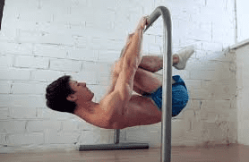

En la calistenia se trabajan ejercicios basicos, y progresivos, hasta lograr una fuerza funcional, para luego avanzar hacia estilos mas propios y elementos mas caracteristicos como una full planche o un front lever
Ejercicios Basicos:
Dentro de los ejercicios basicos podemos separarlos entre ejercicios de "Tiron", "Empuje", asi como tambien ejercicios de abdomen y pierna, o core.



Ejercicios Especificos:
Dentro de los ejercicios especificos, podemos ir trabajando progresiones , es decir los ejercicios en niveles de intensidad menor, hasta ir ganando fuerza y acostumbrando a la vez las articulaciones, hasta llegar a dominar dicho elemento.

